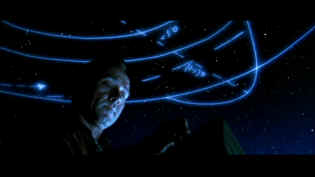

| K-Pax (SE)/ B+, A |
| Universal/2001/121/ANA 2.35 |
What happens when a man appears in Grand
Central Station claiming to be an alien? Well, he's trotted off to a
mental hospital before you can say K-Pax. The first shot of Prot,
the man from another world, is intentionally soft, effectively conveying a difference
about the man and the opening scenes set the visual tone beautifully.
Director Ian Softley proves a solid story-teller with K-Pax.
He's content to deliver clean plot line unfettered by typical genre
conventions. The well-written script by Charles Leavitt script cuts to the quick in effectively getting to
the heart of the story. For a leisurely paced film there's remarkably
little fat.
 |
|
Prot's master class in astronomy. ©Universal |
Aspects of K-Pax do slide
toward sentiment, but it never fails to stay within the bounds set up by
its own world. There are parallels between Prot and Randle P. McMurphy in One
Flew Over the Cuckoo's Nest, though each film retains its very unique
personality and distinctive point of view. A few moments seem staged, like the mass hysteria scene.
Overall, it's a nice change to get a dose of
science fiction without a special effect assault.
The film has a fine sense of humor. It manages to get to
the heart of some typically irksome aspects of society that we encounter.
In a room full of doctors do you call everyone doctor? Excellent shorthand
filmmaking to create the home life of Dr. Powell. There's a strong hint that
at some point Prot will become a threat to the establishment, but the
script manages to skirt the predictable. K-Pax
is laced with philosophy of right and wrong, and acceptance of people, and
even religious philosophy, but they are given a poetic feel that prevents
them from turning banal.
Ed Shearmur's score matches nicely with the
material. Nighttime New York gets a poetic treatment from
Softley and cinematographer John Mathieson.
Kevin Spacey is quite
remarkable as Prot. He keeps eccentricities under control,
letting only little bits creep into the character. Prot's simple delivery of
dialogue is eloquent. Jeff Bridges delivers a very natural
performance as Dr. Mark Powell. It's typically understated and unaffected Bridges: He simply exists naturally within
the film's framework. You have to appreciate such a natural presence.
This special edition DVD of K-Pax is
one fine looking presentation. The very bright transfer balances with excellent contrast range.
Transparent full bandwidth resolution produces consistently stunning
images.. Beautiful black levels are reflected by Chapter 6, a paradigm of balanced black level
presentation. Overall glossy
look. Shadow detail is balanced and bright Outdoor scenes have a lot of punch. The color is
splendid. Color depth is terrific. It helps create an outstanding
dimension to
the picture. The darker scenes come to special life because of the rich
colors. Get a glimpse of that blue ball in the backyard background
at the Powell home. Meticulously clean edges in scenes that are
typically difficult to deliver with perfection. Fine details are extremely
stable. The DTS surround is very directional and even caught me unawares a
few times.
The special edition contains seven deleted scenes, an
alternate ending, and audio commentary from director Ian Softley. In
addition, there's a making of short, a short montage of photos taken by
Jeff Bridges during production.
Reviewed on a Sharp 9000VX DLP Projector


October Sky/A,A

Johnston’s glorious montage work accompanied by Marc Isham's stunning
Americana score are reason enough for watching this exquisite movie.

The Movie Poster Archive includes extensive poster images from the films of stars like Susan Hayward, Kirk Douglas, Katharine Hepburn and many more. Our featured star is Susan Hayward

A new Films on Disc space dedicated to purging accumulated home theater angst
and other movie related frustrations, with a measure of praise to balance the
vitriol. The first column takes on:
Inserts and the Pop-Up Window


Nearly 40 key software and hardware companies representing leading
consumer electronics giants, major movie studios home video and music video
units have joined forces to establish the DVD Video Group.

ISF Monitor Calibrations
in the Tristate New York area. Lots of hardware info and frequent hardware peaks
from video expert Kevin Miller. They may be judgmental, but that's the point,
isn't it. Lots of DVD reviews plus news and more.
 Have you visited Home Theater Talk
lately? One of the friendliest places on the Net for Home Theater and DVD
discussion, you can get help for installation problems or simply share your
opinions with other Vidiots.
Have you visited Home Theater Talk
lately? One of the friendliest places on the Net for Home Theater and DVD
discussion, you can get help for installation problems or simply share your
opinions with other Vidiots.

Glenn Erickson's insightful DVD reviews have been a Internet fixture for several
years. Check out some of his sophisticated feature articles. Currently hosted by
DVD Talk.